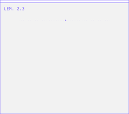
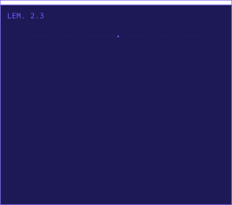

Light variants (as <img>, GitHub-equivalent sandbox)

automata-light.svg — Rule 30, 5.1s loop (SMIL)

harmograph-light.svg — draw-in + 14°/s spin (CSS)
Dark variants

automata-dark.svg

harmograph-dark.svg